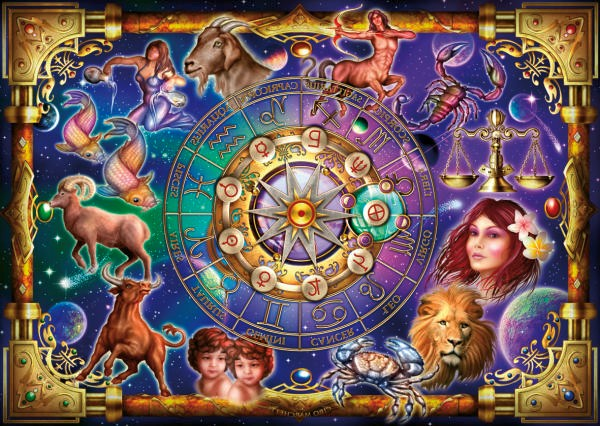
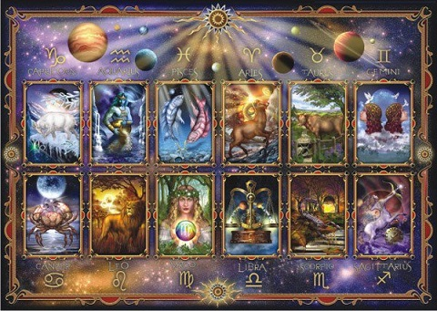
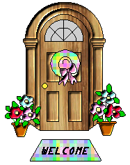
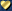

 
STUDIO DI ASTROLOGIA ACQUARIO di Laura Lencia
PAGINE ASTROLOGICHE "CLASSICHE"
LAURA esegue personalmente:
PAGINE DI ASTROLOGIA E DELLA FAMIGLIA in ITALIANO e in ENGLISH

 LA MIA FAMIGLIA POESIE e PENSIERI
Lasciate un messaggio nel mio libro degli ospiti
Altri Oroscopi / Numerologia / Onomanzia / Tarocchi
Web Mistress: Princess Silvia, Lorena and Laura Lencia
Copyright 1998-2020 Tutti i diritti sono riservati. Senza il consenso dell'autrice è vietata ogni riproduzione parziale o totale dei contenuti.
Sei il visitatore n° (Contenuto Aggiornato 29/09/2020)